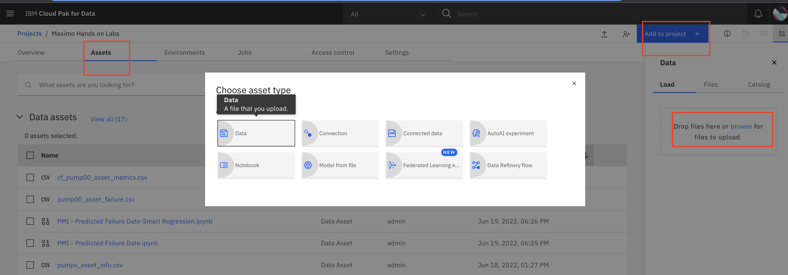
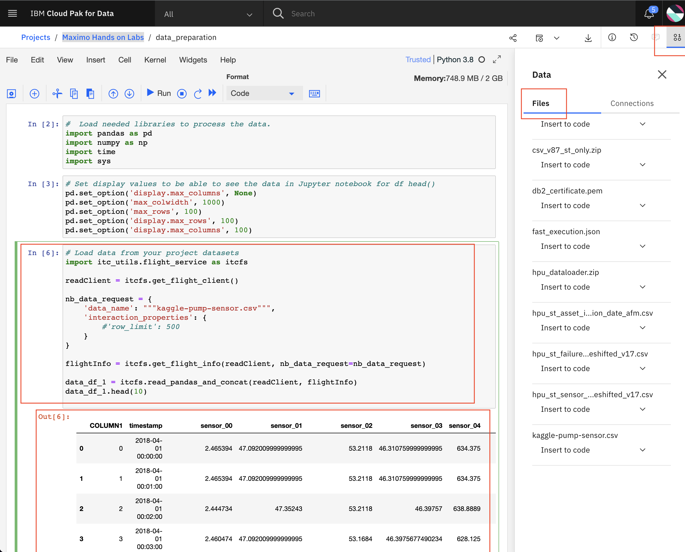
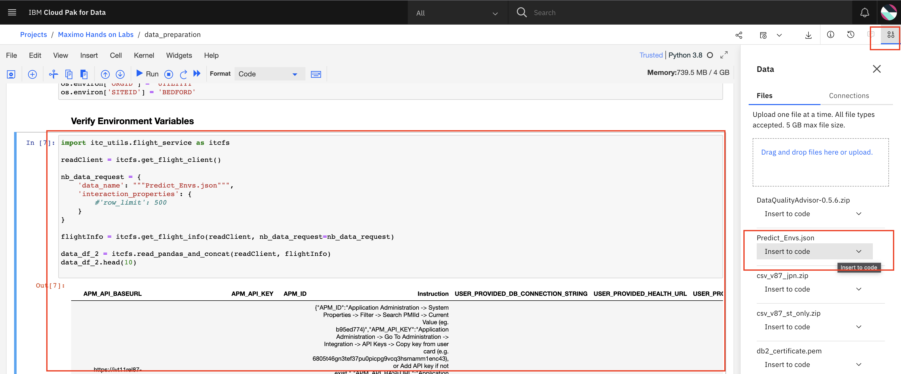

Data Preparation and Loading Using Notebooks
In this exercise you will use Predict libraries and notebook in Watson Studio to:
- Download Pump Data and Import into Watson Studio Notebook from Kaggle website
- Add the data prepration notebook template included with this lab to prepare the pump data.
- Create an asset information file to describe the pump used in later exercises for EOL Curve algorithm.
- Create an asset metrics file used to train and test the Failure Prediction Date algorithm.
- Create an asset failure file used to train and test the Failure Prediction Date algorithm.
Note
Be sure to prepend your initials on all the data asset files you create in this exercise so that you can be sure you are creating the files correctly.
Download Pump Data and Import to Watson Studio Notebook
-
Download data from Kaggle. Name the file
kaggle-pump-sensor.csv. If the file is already present in your project you can skip this step. -
Click on
Assetstab. Click onAdd to Projectbutton. SelectData. Browse to and select the CSV file you downloaded from the Kaggle Web site. Alternatively just drag the CSV file into data asset project on the right. 
Add the Data Preparation Notebook to Watson Studio
Data preparation involves cleaning data, reshaping the data columns and rows into the format and values needed for each notebook template. In some cases it involves removing rows or columns that have invalid or blank values (NaN). Or imputing values to replace blank values (NaN). The data preparation notebook has already been created for you for use.
-
Use the steps from the previous exercises Add Notebook From File to a Watson Studio Project to add the
data_preparation.ipynbto your Watson Studio Project or the Project suggested by your facilitator. Rename your notebook by pre-pending your initials to the notebook.
Use the steps below to understand or recreate the notebook yourself. -
Create a
new notebook from fileto prepare the date to be used by Predict for predicting failures. Browse to open the./notebooks/data_preparation.ipynbbe sure to pre-pend your initials and pick the v4CPU Python 3.8 environment. -
Study each notebook cell in the data_preparation notebook. The first cell loads needed libraries to process the data using Pandas and Numpy which are open source libraries used to analyze and process timeseries data. The explanation of these libraries is outside the scope of this lab and is a pre-requisite.
Sample Code
import pandas as pd
import numpy as np
import time
import sys
- The next cell sets the display values to be able to see the data tables and logs in the Jupyter notebook for
df head()
Sample Code
pd.set_option('display.max_columns', None)
pd.set_option('max_colwidth', 1000)
pd.set_option('max_rows', 100)
pd.set_option('display.max_rows', 100)
pd.set_option('display.max_columns', 100)
-
Insert the code to load the
kaggle-pump-sensor.csvthat you uploaded earlier in the exercise. Click on thecode generator iconat the top of Watson Studio. Click on thekaggle-pump-sensor.csvfile you downloaded earlier and namedkaggle-pump-sensor.csv. -
The code is inserted into a new cell below where you are currently active. 
Set Environment Variables
Set the environment variables you will use throughout data preparation. See Setup Watson Studio for how to find these values.
Sample Code
ASSET_ID = ID of each asset ie pump in your CSV files.
APM_ID = Value for the mxe.PMIId system property. | Used to train and score all notebooks |
APM_API_BASEURL = Root of the URL value for the PREDICTAPI endpoint. | Used to train and score all notebooks |
EXTERNAL_APM_API_BASEURL = Route location for the Predict project retrieved from the Red Hat® OpenShift® Container Platform. | Used to download the notebooks |
APM_API_KEY = API Key to make secure programmatic calls to APM
import os
os.environ['ASSET_ID'] = 'your_asset_id'
os.environ['APM_ID'] = 'your_APM_ID'
os.environ['APM_API_BASEURL'] = 'your_https://main.fake.suite.maximo.com/maximo/'
os.environ['EXTERNAL_APM_API_BASEURL'] = 'your_https://main.fake.maximo.com/maximo/'
os.environ['APM_API_KEY'] = 'your_APM_API_KEY'
Verify Environment Variables
You can check the environment variables and reference them by using the auto insert code in Watson Studio. Click on the code generator icon at the top of Watson Studio. Click on the sensor data csv file you loaded earlier and nameed 'kaggle-pump-sensor.csv'

Prepare Asset Information Data
The Asset Information file is used for End Of Life Curve. This step can be skipped if you don't want to create an End of Life Curve in Predict.
You must load metadata describing your asset and meter data describing the timeseries metrics and failure dates. There are 3 files needed. Each file is described below.
To load asset data into Health you must have asset date. an anomaly model or failure prediction model using Predict you must include For model training using Predict you must include this file. If you are using Health and have an existing installation of Manage
Asset information data is time series data that should have the following column formats:
| Column Name | Description |
|---|---|
| asset_id | String that is the unique asset identifier like ST_1393137 |
| installation_date | String for timestamp of reading Predict supports formats like date 1998-03-28 or date time 2008-01-08 00:00:00 |
| decommission_date | String for timestamp of reading Predict supports formats like 2008-01-08 00:00:00 |
Example CSV File:
asset_id,installation_date,decommission_date
ST_1393137,1998-03-28,
ST_1393138,1999-03-28,
ST_1400501,2002-01-01,
ST_1400502,1978-01-01,
ST_1400503,1988-01-01,2017-01-01
ST_1400504,1972-02-01,2013-09-01
ST_1400505,1978-04-01,2018-09-01
ST_1400506,1985-12-01,2000-09-01
ST_1400507,1990-01-01,2020-09-01
ST_1400508,1982-12-01,2021-01-01
ST_1400517,2004-05-29,
ST_1400518,2001-01-26,
ST_1400519,2004-03-11,
Create an Asset Information File
Create an asset information file for the pump data. Since the Kaggle pump data is for a single pump you can create a file with a single asset. Since the pump data doesn't have asset decommission dates you can leave them blank.
In this step you will create the CSV file and save it to your project assets in Watson Studio. You will use a Watson Studio Python library named ibm_watson_studio_lib that is available in your environment by default. See this API reference for more information.
Sample Code:
ASSET_INFO_FILE = "pumps_asset_info.csv"
asset_info_list = [ ['pump_00',pd.Timestamp('2008-01-08'),""]]
df_asset_info = pd.DataFrame(asset_info_list, columns=['asset_id','installation_date','decommission_date'])
print(df_asset_info)
from ibm_watson_studio_lib import access_project_or_space
wslib = access_project_or_space()
wslib.save_data(ASSET_INFO_FILE, df_asset_info.to_csv(index=False).encode())
Example CSV File that will be created:
asset_id,installation_date,decommission_date
pump_00,2008-01-08,
Prepare Asset Metrics Data
Asset metrics data is time series data that must have the following column formats:
| Column Name | Description |
|---|---|
| timestamp | String for timestamp of reading Predict supports like YYYY-MM-DD HH:MM:SS 2008-01-08 00:00:00 |
| asset_id | String that is the unique asset identifier like ST_1393137 |
| replace_with_your_metric_name | String, float, integer values for the metric name that has time series value of the metric. Add columns for each |
| deviceid | The device identifier for the pump devices pump00 and pump01 |
| devicetype | Type of device or asset type. For example SubmersiblePump |
Example CSV File:
timestamp, asset_id,VELOCITYX,VELOCITYY,VELOCITYZ,MOTORTEMP,WINDINGTEMP,CURRENT,PRESSURE,LOAD,deviceid,devicetype
2008-01-08 00:00:00,ST_1393137,2.789723591922755e-05,1.6746073164430882e-05,8.339162527937205e-05,100.83577170779785,44.35493000421977,248.35431420298488,236.06861760559738,119.19549771099527,ST_1393137,Pump
2008-01-08 00:00:00,ST_1400503,1.8955077909665885e-05,5.310167683286737e-05,4.929701336603421e-05,117.40003242411258,59.44633346537405,198.43270265068318,135.58041388401696,363.32438733010264,ST_1400503,Pump
2008-01-08 00:00:00,ST_1393138,5.383833971733809e-05,8.621918766532621e-05,0.00022628816228392745,56.84127240243945,85.39674348536191,320.10652050792254,116.96629884075016,348.63962293620796,ST_1393138,Pump
2008-01-08 00:00:00,ST_1400504,0.0001924944000548656,1.1741761162809006e-06,8.175834516599423e-05,119.5450558945755,94.7939330989897,236.70840492432868,32.6440692097963,312.4522186383818,ST_1400504,Pump
2008-01-08 00:00:00,ST_1400501,0.003545132038944409,6.876746074246931e-07,0.0036784498219412103,45.59886793076733,23.05892702945967,286.74721509016484,180.20107874577167,231.70223738465447,ST_1400501,Pump
2008-01-08 00:05:00,ST_1400504,0.00019302373395002626,0.00016932421485671423,0.00013430225226540582,190.6814045868194,37.57188465045573,137.3792392640947,299.6397304979968,159.14737257788806,ST_1400504,Pump
2008-01-08 00:05:00,ST_1400503,2.0484241964768835e-05,0.00010325648402054188,5.190215923800423e-05,54.63392121323369,36.27128188087939,300.653034213001,255.42177133667667,354.67651009829115,ST_1400503,Pump
2008-01-08 00:05:00,ST_1393137,6.366443036021074e-05,7.064831711578456e-05,0.00011524493308429085,54.97140429029558,38.663214620823275,227.54222031273997,156.7913987644162,130.128691037622,ST_1393137,Pump
2008-01-08 00:05:00,ST_1393138,0.00013067224960744417,0.0008823036374320248,0.00032697196744563284,93.54844644228176,1.0334067253278365,201.09726853381162,177.26721567826152,464.38594263559753,ST_1393138,Pump
2008-01-08 00:05:00,ST_1400501,0.006280909664161449,0.0010025129547774347,0.004949649433126646,120.43190732195221,56.22655349254132,103.56854139558924,149.58631977664385,327.4758640952711,ST_1400501,Pump
2008-01-08 00:10:00,ST_1400504,0.00020046116700583871,0.00023040699143567206,0.00019016599105797782,26.21601912040133,17.065778325053998,283.1600018147578,83.84456591349925,214.12986021619156,ST_1400504,Pump
2008-01-08 00:10:00,ST_1393137,7.602581095239591e-05,7.9852673251668e-05,0.00012796988361707395,34.50644451498961,71.16775071874916,187.36661322063892,213.0005900404975,78.99669369869281,ST_1393137,Pump
2008-01-08 00:10:00,ST_1400503,8.657794445832145e-05,0.00013001986273436517,7.091561697253335e-05,74.35723049281981,48.2234783756648,126.26599720968146,177.59628306468898,258.13878219243736,ST_1400503,Pump
2008-01-08 00:10:00,ST_1400501,0.010575435663603527,0.0014778309163699932,0.005209847134218125,98.86547795829622,36.977105925193136,178.05030077180396,79.52583077900974,243.4138352490094,ST_1400501,Pump
Create an Asset Metrics File
Since the Kaggle pump data is for a single pump you can create a file with a single asset. Since the pump data doesn't have decommission dates you can leave them blank.
Also since not all the columns are needed to make a failure prediction we can reduce the columns down to the minimum number. Reduce the 'data_df_1' that you read in earlier and add the required columns for ASSET_ID,deviceid, devicetype.
Select only the columns that are needed for pump predicting failure.
Sample Code:
pump_df = data_df_1[['timestamp','sensor_10', 'sensor_04','sensor_02', 'sensor_12','sensor_05', 'sensor_00','sensor_11', 'sensor_13','sensor_06', 'sensor_01','sensor_09', 'sensor_26']]
Assign constant values for the columns that are needed for pump predicting failure for asset_id, deviceid and devicetype
Sample Code:
print(os.getenv('ASSET_ID'))
# Add a column for deviceType DeviceID and Asset_ID
pump_df['asset_id'] = os.getenv('ASSET_ID')
pump_df['deviceid'] = os.getenv('ASSET_ID')
pump_df['devicetype'] = os.getenv('DEVICE_TYPE')
pump_df.head()
Prepare Asset Failure Data
Asset failure data is time series data that describes when the asset failure periods happen. Asset failure data must have the column formats in the table below.
The failure dates includes the failure CSV data which identifies the start and end of failure dates for each asset id with the following columns:
| Column Name | Description |
|---|---|
| fail_date | String for timestamp of day 2008-01-08 and day-time 2008-01-08 00:10:00 that the asset failed. |
| asset_id | String that is the unique asset identifier like ST_1393137 |
| description | String,describes the failure cause or condition. |
| failure_code | String that identifies the fault. |
| problem_code | String that desribes the problem code for troubleshooting. |
| site_id | String of where the asset is located |
| failure_record | Integer that identifies the Manage record identifier failure instance of failure types. |
Example CSV File:
fail_date,asset_id,description,failure_code,problem_code,site_id,failure_record
2008-01-08,ST_1393137,Pump stopped due to failure,PUMPS,STOPPED,DIST1,1
2008-02-10,ST_1393137,Pump stopped due to failure,PUMPS,STOPPED,DIST1,1
2008-03-11,ST_1393137,Pump stopped due to failure,PUMPS,STOPPED,DIST1,1
2008-04-09,ST_1393137,Pump stopped due to failure,PUMPS,STOPPED,DIST1,1
2008-05-06,ST_1393137,Pump stopped due to failure,PUMPS,STOPPED,DIST1,1
2008-05-18,ST_1393137,Pump stopped due to failure,PUMPS,STOPPED,DIST1,1
2008-06-04,ST_1393137,Pump stopped due to failure,PUMPS,STOPPED,DIST1,1
2008-06-30,ST_1393137,Pump stopped due to failure,PUMPS,STOPPED,DIST1,1
2008-01-24,ST_1393138,Pump stopped due to failure,PUMPS,STOPPED,DIST1,1
Create an Asset Failure File
Create an asset failure file for the pump data. Since the Kaggle pump data is for a single pump you can create a file with a single asset. Since the pump data doesn't have asset decommission dates you can leave them blank.
In this step you will create the CSV file and save it to your project assets in Watson Studio. You will use a Watson Studio Python library named ibm_watson_studio_lib that is available in your environment by default. See this API reference for more information.
Review the code cells to understand how to drop columns and add columns to using Pandas to create the right format for the Asset Failure CSV file.
Congratulations. You now have the pump data files in the files and format required for evaluating algorithm and prediction performance in the next exercises.